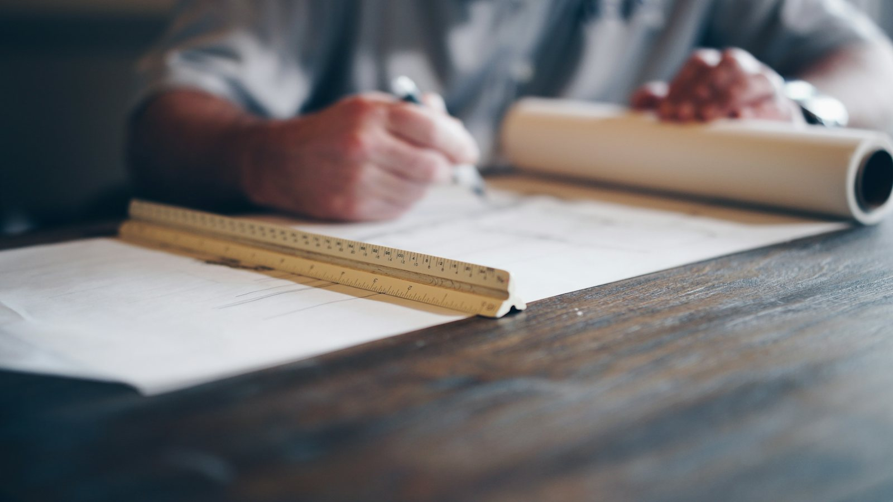
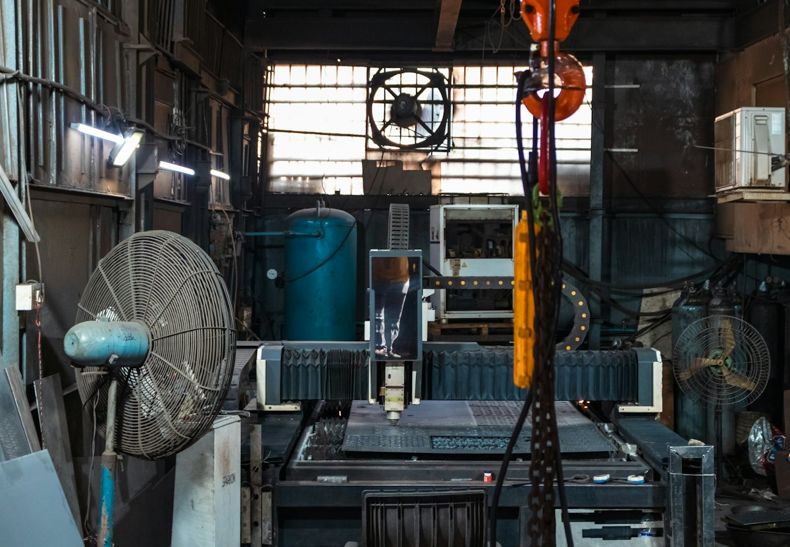

A quote, by handA request lands.
Someone reads it.
Looks up every price.
Builds the number.
Sends it. Chases it.
1.5 hours. Every quote.
Your customer asked a few shops.
The first price back usually wins.
Yours is still on someone’s desk.
Now, the same quote.
A few minutes. Nothing goes out without you.

Big companies already automate their work.
Small shops get sold hype instead.
We think the 12-person business deserves the real thing — sized for it, explained honestly, a person always in control.
Before fourtaps, we worked at
AmazonSonyAteam
Now we work for the 12-person shop.
Small steps. Stop after any.
- 1A free call. 30 minutes. No pressure.
- 2We measure one desk. You get the real number, even if it’s small.
- 3We build it. In your own system. Nothing goes live until you’ve tried it.
- 4We keep it running. Checks, fixes, small changes. Only if you want it.
If a person is the better answer, we’ll tell you.
Quotes on paper, a site visit for every job, a few quotes a week: hire someone. We’ll say so, even if it costs us the job.
Seven taps. Your real number.
The sliders were a start. Tap the answer that fits, or skip one you don’t know.